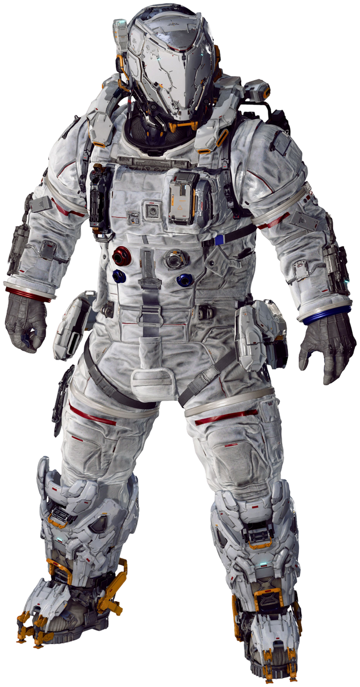
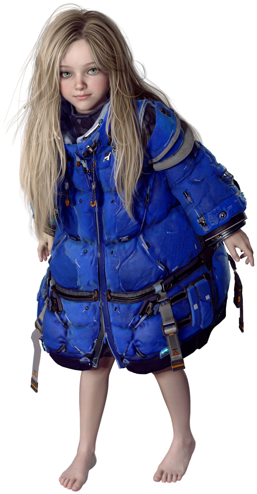

A Terra já não é mais a nossa casa.
Pragmata é um jogo de ação e aventura com elementos de ficção científica da Capcom. Acompanhe Hugh, membro de uma arruinada equipe de investigação, e Diana, um androide, enquanto exploram uma instalação lunar controlada por uma IA rebelde e tentam voltar à Terra. O título utiliza o máximo da tecnologia da próxima geração para criar uma imersão nunca antes vista em ambientes espaciais.


Em uma Lua colonizada e agora isolada, um herói improvável deve escoltar uma criança misteriosa através de cenários que desafiam as leis da física. Juntos, eles precisam descobrir a verdade por trás da "Liberdade" e o que aconteceu com a civilização terrestre enquanto enfrentam anomalias digitais e mecânicas.